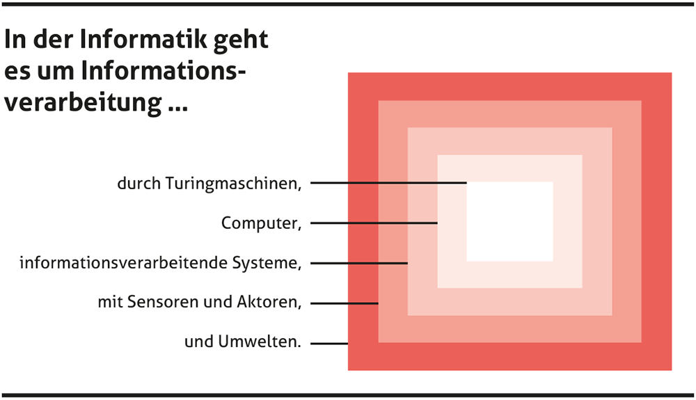

Mediendidaktik
Rahmenbedingungen
![]()
Begriffsdefinitionen
Inhalt
Begriffsdefinitionen
Medienderfahrung von Jugendlichen
Organisation der ICT an Schulen
ICT-Konzepte
Abbildung 1: (Merz et al., 2012, S. 6)
Austausch
06:00
Übungsaufgabe 1 Lesen Sie in Merz et al. (2012, S. 7) die Beschreibung der Handlungsfelder.
Pair
- Besprechen Sie mit Ihrer Sitznachbarin in wiefern ihr Fachunterricht (nicht M&I) über Medien ist.
- Suchen und besprechen Sie ein Beispiel von gutem Medieneinsatz im (eigenen) Unterricht.
Share
Definition 1 (Medium)
Medium als stofflicher Vermittler
Weil Stoffe Impuls und Energie übertragen, können sie auch Information übermitteln. Die Übertragung von Schall benötigt z. B. einen vermittelnden Stoff wie Luft.
Medium als Kommunikationsmittel
Von der stofflich vermittelten Informationsübertragung wurde der Begriff Medium auf Kommunikationsmittel beliebiger Art zwischen Sendern und Empfängern übertragen. Auch die ältere magische Bedeutung blieb in dieser Vorstellung erhalten.
Digital
Definition 2 (Binär) Binär heisst, dass es nur zwei Zustände gibt.
Aussage 1 1 bit (0 xor 1) ist die kleinste Informationseinheit in der Informatik.
(Herkömmliche) Computer speichern und verarbeiten binär.
Definition 3 (codiert) Codiert heisst, dass es eine bijektive (eineindeutige) Abbildung zwischen zwei Mengen gibt.
Definition 4 (Digitale Medien) Digital Medien sind Medien welche binär codiert sind.

Abbildung 2: American Standard Code for Information Interchange (ASCII) - (CCO - Quelle )
{kind=link}
Medium: Text
Übungsaufgabe 2 Wir
- benutzen einen Texteditor.
- schreiben eine .txt Datei (“plain text”).
- schreiben eine .html Datei mit korrekter HTML-Syntax.
- unterscheiden Markup von Style.
Abbildung 3: (Ammann, 2009, S. 9)
Medienkompetenz
06:00
Übungsaufgabe 3 Geben Sie die wichtigsten Punkte vom Artikel wieder.
06:00
Think
Übungsaufgabe 4 Lesen Sie Ammann (2009). Vergleichen Sei den Kompetenzbegriff mit den Begriffen von Weinert (2014) aus der Sekundarstufe 1 und Klieme (2008)
Pair
Diskutieren mit der Sitznachbarin welche Medienkompetenz sie besitzen.
Zeigen Sie in Lernmaterialien von ihrem Fach, wie Medienkompetenz gelehrt wird.
Was ist Informatik?
Abbildung 5: (Döbeli Honegger, 2017, CC BY-SA 4.0)
Definition
Definition 5 Informatik ist die Wissenschaft der strukturierten und automatischen Informationsverarbeitung.
Themen der Informatik
- Angewandte Informatik
- Technische Informatik
- Praktische Informatik
- Theoretische Informatik
Medienbildung, Informatik und Anwendungskompetenzen sind nicht dasselbe
- Informatik
- Auto bauen & entwickeln
- Anwendungskompetenzen
- Auto bedienen
- Medienbildung
- Verkehrsgerecht fahren
Übungsaufgabe 5 Erklären Sie ihrem Sitznachbarn das gesetzeskonforme (verkehrsgerechte) parkieren im Hang.
05:00
Übungsaufgabe 6 (Doppelgänger) Lesen Sie sich in die Doppelgänger Kampagne ein (Bayerisches Landesamt für Verfassungsschutz, 2024).
Lesen Sie insbesondere S.16.
Medienderfahrung von Jugendlichen
Inhalt
Begriffsdefinitionen
Medienderfahrung von Jugendlichen
Organisation der ICT an Schulen
ICT-Konzepte
James Studie
Verschaffen Sie sich einen Überblick über die gesammelten Daten in der James-Studie 2024 (Külling-Knecht et al., 2024).
Jungendschutz
Crypto Wars
Soll der Staat die Möglichkeit erhalten in private Kommunikationskanäle mitzulesen um insb. Pädokriminalität zu bekämpfen?
Alterssperren
Sollen Platformen sicherstellen müssen, dass Kinder keine gefährdenden Inhalte zu sehen bekommen (vgl. Australien)?
Hash-Functions
Problemstellung
Anbieter muss Passwort vergleichen können ohne das Passwort zu besitzen. Wie geht das?
. . .
Gesucht
- One-way-function
- collision resistance
Beispiele
MD5, SHA-256, …
Reality Check
- Passwort
- Salt
- 100’000 Hash-Iterationen -> Hash
- Speichere Salt und Hash
- Beim Login wird das Passwort mit dem Salt verbunden, gehasht und der Hash verglichen.
Cryptographic Hash Function
CHF haben noch viele andere praktische Anwendungen!
Organisation der ICT an Schulen
Inhalt
Begriffsdefinitionen
Medienderfahrung von Jugendlichen
Organisation der ICT an Schulen
ICT-Konzepte
Wunschausstattung
- Welche Ausstattung (Hard-/ Software) würde Ihre Arbeit als Lehrperson optimal unterstützen?
- Welche Unterstützung wünschen Sie sich von der Schule?
Zuständigkeit
Daraus ergibt sich auch die Zuständigkeit der Gemeinden für die Einrichtung der Schulen mit Netzwerken, Servern und Geräten für die Schülerinnen und Schüler, sowie für die Lehrpersonen. Das gleiche gilt für die Lehrmittel.”
Amt für Kindergarten, Volksschule und Beratung (AKVB) (o. J.)
Empfehlungen
Die Nutzung von digitalen Informations- und Kommunikationstechnologien hat sich neben Lesen, Schreiben und Rechnen als Grundkompetenz in der Gesellschaft etabliert.
Gemeindebehörden fordern von den Schulen das Erarbeiten und die periodische Überprüfung eines ICT-Konzeptes, […]
Erziehungsdirektion des Kantons Bern (2016)
05:00
Übungsaufgabe 7 (Kantonale Empfehlungen) Lesen die kantonalen Empfehlungen.(Erziehungsdirektion des Kantons Bern, 2016)
Weitere Empfehlungen
- Arbeitsgeräte der Schülerinnen und Schüler
- Arbeitsgeräte für Lehrpersonen
- Vernetzung innerhalb der Schule und Bandbreiten ins Internet
- Datenablage
- Peripheriegeräte
- Lizenzen und Nutzungsverträge
Erziehungsdirektion des Kantons Bern (2016)
Abbildung 6: Spezialistin/Spezialist Medien und Informatik (SMI) (Erziehungsdirektion des Kantons Bern, 2018, S. 3)
Kosten
| Kategorie | Element | Anzahl | Kosten (CHF) |
|---|---|---|---|
| Schülergeräte | Chromebooks | 275 | 123’750.00 |
| MacBook Air | 30 | 33’870.00 | |
| Kopfhörer, Drucker, Chromecast (div.) | - | 6’080.00 | |
| Software/Lizenzen | Chrome OS EDU Lizenzen (Chromebooks) | - | - |
| G Suite Enterprise for EDU Lizenzen (Lehrpersonen) | - | - | |
| MS Office 365 Lizenzen (Unterrichtsvorbereitung) | - | 11’100.00 | |
| Totalkosten Sekundarstufe I | - | - | 174’800.00 |
Definition 6 (Prozessorarchitektur) Die Prozessorarchitektur bezieht sich auf die spezifische Struktur und Organisation eines Prozessors, der ein wesentlicher Bestandteil von Computern und anderen elektronischen Geräten ist
Beispiele:
x64, ARM, RISV-V
ICT-Konzepte
Inhalt
Begriffsdefinitionen
Medienderfahrung von Jugendlichen
Organisation der ICT an Schulen
ICT-Konzepte
05:00
Übungsaufgabe 8 (ICT-Konzepte)
- Lesen Sie 2 ICT Konzepte durch.
- Was stellen Sie fest?
Bibliographie
PHBern, Institut Sekundarstufe 1, Richard Conrardy, Dozent